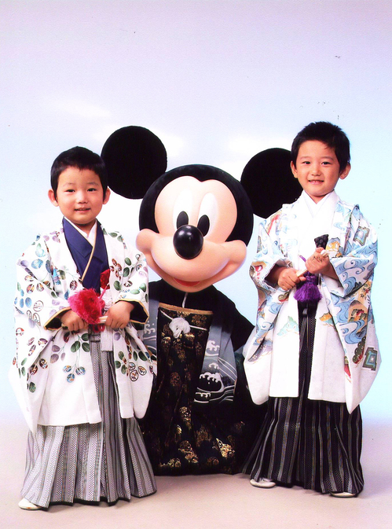

カテゴリ
JC（4）
家族（14）
気付き（3）
携帯（7）
仕事（10）
笑顔（1）
食べる・飲む（2）
最近の記事
新横浜へ出張です。
大嶋啓介氏講演会終了です。
とうとう３月１２日になってしまいまし た。
生意気な３歳児
ラジオ出演＆新聞掲載告知
やきべぇ
柏〜水戸！
３月１２日、伊勢崎市文化会館にて大嶋啓介氏 の講演会を開催します。
ＪＣ 京都会議
悩んだあげく
月別アーカイブ
2009年3月（5）
2009年2月（3）
2009年1月（9）
2008年12月（7）
2008年11月（1）
2008年10月（3）
2008年9月（6）
2008年8月（4）
2008年7月（1）
2008年6月（8）
< 母家の建て替え
｜
トップページ
｜
居酒屋てっぺん >
2008年10月13日（月）
七五三

先日七五三の写真撮影が終わり、写真が仕上がったので取りに行ってきました。
さすが５万円もかけただけあって、仕上がりもばっちりでした。
右側が長男の結矢（５歳）で、左側が次男の晴輝（３歳）です。
トラックバック（0）
コメント（0）